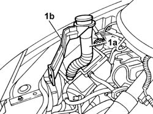

5050A12 WINDSCREEN WASHER FLUID RESERVOIR FILLER PIPE (IN ENGINE COMPARTMENT) - R.R.
- Path
- Procedures > 50 AUXILIARY UNITS > 5050 SCREEN WASHERS AND HEADLAMP WASH/WIPE > 5050A WINDSCREEN AND HEADLAMP WASHER RESERVOIR > 5050A12 WINDSCREEN WASHER FLUID RESERVOIR FILLER PIPE (IN ENGINE COMPARTMENT) - R.R.
- Kind
- repair procedure (removal / refitting; the operation number is the code)
- Applies to
- all engines; all production periods
- Interactive page
- https://sloeber94.github.io/elrnDB-fUlss/en/#/179007499
Applies to: all engines; all production periods
 Removing
Removing
 Refitting
Refitting